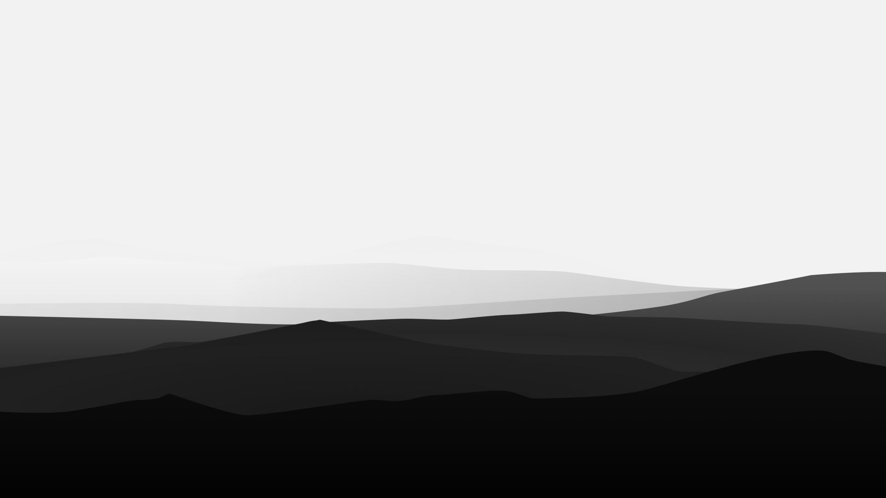

KNOWLEDGE

Knowledge – The Deep Web is a treasure-trove of information and
knowledge. It has some of the largest virtual libraries, more than you
can possibly fathom. The knowledge available on the Deep Web is often
accessed by teachers, students, and researchers as it is not so
readily available on standard search engines. Scientific data that has
been kept hidden from the public eye can be easily found in the Deep
Web by spending some time researching about it.
Below we take a look at few educational and informative dark web
websites.
INFORMATIVE WEBSITES
Archive.org- A gigantic database of media that’s been entered into
the public domain. Sound recordings, old videos, rare books, pretty
much anything you might need to build your next great presentation
at school, work, or both! Partnered with the Wayback Machine, which
has over 280 billion webpages that have been indexed since nearly
the inception of the internet itself.
Library Of Congress-Digitized archives of everything that’s entered
the Library of Congress. Over 200 years of historical information as
well as up-to-date volumes
Osti.gov-Government research archives, complete with a history of
all studies undertaken by the government. Your tax dollars paid for
these, so why shouldn’t they belong to you? 100 percent searchable,
and capable of returning results from within any document you’re
trying to search for.
These are just a few of many informational websites present on the
dark web
ANONYMITY

Anonymity – While some consider anonymity to be a double-edged sword,
it should be appreciated positively as it results in freedom. Browsers
that are used to access the Dark Web, such as Tor, are secure as they
guarantee that your IP address remains untraceable. To make it more
secure, always use Tor with an underlying VPN.
Here are ways to protect yourself while browsing on dark web.
TOR

TOR is the most popular anonymity network exist in the dark web.
The TOR anonymity network is free, open-source software, originally
developed by the US Navy Research Laboratory (NRL) in the mid-1990s to
protect intelligence online communications. Later in 2004, the NRL
released the TOR source code under a free license. TOR is now managed
by The Tor Project, Inc, a non-profit organization that maintains TOR
development.
TOR network can be used to anonymize internet user’s online identity
when surfing the surface web, in addition to enabling access to TOR
anonymous websites (also known as TOR hidden services). To use TOR to
browse the surface internet anonymously, all you need to do is to
download the TOR browser (https://www.torproject.org/download) and use
it -as you do with your regular web browser- to surf online.
VPN
Using a VPN is the best measure to stay anonymous online. With a VPN,
your data is encrypted before it reaches your ISP. That way, your
internet provider won’t know you’re browsing on Tor, keeping your
identity on the Dark Web fully anonymous
VPN connection also provides an additional layer of security as it
hides your IP address by relocating your virtual location before your
data even reaches the Tor network. Many quality providers offer
various protection features like military-grade data encryption and
DNS leak protection to make sure your online identity is fully
protected as well as a kill switch option should your internet
connection drop suddenly.
FREEDOM OF SPEECH
Freedom of Speech – As discussed in the preceding point, freedom of
speech is one of the most important freedoms that are a direct
consequence of anonymity. Some countries practice the right to freely
express your thoughts and opinion very strongly without fearing any
form of persecution. This right still remains a utopia for most of the
world. Dark Web allows users to freely communicate without fearing law
enforcement or government agencies as the communication is encrypted
and IP addresses are masked to protect their identity.
CONS OF DARK WEB
DRUGS AND BANNED SUBSTANCES
Drugs and Banned Substances – The Dark Web is a safe haven for illegal
activities related to the drug and contraband trade. One of the most
well-known marketplaces for weapons, drugs, and other illegal stuff,
was the Silk Road and was available on the Dark Web. As a user, you
should be very careful while accessing the Dark Web as one can be
easily influenced by the easy availability of such items which will
eventually land them into trouble.
CHILD PORNOGRAPHY
Child Pornography – Child pornography is rampant on the Dark Web. We
are not proud of it but it is a reality. There are literally gigabytes
of child porn being traded on the dark web every day. You should avoid
such websites as it is not ethically or morally correct to be a part
of them.
MALWARE
While the Dark Web is a place for hacktivists to meet and also stop
many digital attacks, it’s also a platform for those hackers who are
eager to exploit vulnerable users. They create fraudulent sites on the
Dark Web containing malware that can infect your computer. These
malicious programs can record keystrokes, steal documents and
financial data, record audio and video from your computer, or even
hijack your personal device for blackmail.
CRIMINAL ACTIVITY

Apart from hackers, the Dark Web is often used by many criminals to
sell stolen goods, weapons, drugs, and fake documents (i.e.
passports). Criminals have also been known to use the Dark Web to hire
hackers and assassins. Some sites have disturbing and illegal content
like child pornography or even live streamed murders.
The list of criminal activities taking place on the Dark Web grows
every day and it can be difficult to filter through the unknown
platform. I strongly advise against browsing through randomly found
sites — that way you will avoid accessing any highly unsettling
content.
SURVEILLANCE

Law enforcement agencies and governments monitor the Dark Web to catch
criminals. As it’s incredibly difficult to identify users on the
Darknet, the governments usually set up fake illegal websites to catch
cybercriminals. In some countries, you could attract the attention of
the authorities simply by using a browser like Tor.
Law enforcement regularly takes down illegal sites on the Dark Web and
reveals the identities of the sites’ visitors. However, as long as you
remember to abide by the lawful uses of the Darknet, you won’t have to
worry about alerting the authorities.
BRIGHT SIDE OF DARKWEB
Note: Avoid attempting to access .onion sites from a surface web
browser and proceed with caution.
1. The Chess
“The Chess” is a dark website dedicated to fully anonymous games of
chess, played in real time against a stranger. Once you create an
account, you can participate in unlimited gaming or talk strategy in
dedicated forums. There’s no cryptocurrency fee and the rules are
transparent. If there were any downside, it would be that the UI of
this website is a lot like gaming in Windows 95.
2. Academic Research
Darknet resources such as Sci-Hub offer free access to tens of
millions of academic papers, but these services aren’t necessarily
legal. You’re better off sticking with surface web resources such as
Google Scholar to avoid breaking intellectual property laws. Late last
year, the American Journal of Freestanding Research Psychology (AJFRP)
became the first free and open Darknet academic journal. All academic
papers must be submitted by the original authors. It remains to be
seen whether AJFRP will become a successful project, or even the first
of many darknet-based academic exchanges.
3. ProPublica
This American nonprofit news organization was the first major media
outlet to create a dedicated presence on the darknet in 2016.
ProPublica specializes in investigative public-interest journalism and
was the first online-only source to ever win a Pulitzer Prize in 2010.
The onion site offers anonymous access to individuals worldwide,
including readers in countries where journalism is tightly censored.
4.SecureDrop
This open-source submission system is widely used by journalists to
anonymously communicate with sources. SecureDrop doesn’t record a
submitter’s IP address or any browser data, simply storing the date
and time of messages. Forbes, The New Yorker, The Washington Post and
Vice Media are just several of many major media outlets that use
SecureDrop. A full list of adopting media outlets is available on the
service’s surface website. The U.S. government is also experimenting
with SecureDrop to potentially accept anonymous vulnerability reports
and collaborate more with white hat hackers, per CyberScoop.
5. The CIA
Other agencies have adopted a presence on the darknet to encourage
anonymous collaboration with sources. The U.S. Central Intelligence
Agency (CIA) has an onion site with a “Contact Us” form. The site
includes a promise to “carefully protect all information you provide,
including your identity.”
6. Tor Metrics
Tor Project Metrics has a dual presence on the surface web and
darknet. It publishes anonymous data and analytics, providing insight
into how the Tor browser technology is used, and by whom. Academic
research of Tor metrics revealed that at least 60 percent of Tor’s
usage is for legal purposes. Political censorship tops the list of why
users download Tor for noncriminal purposes.
7. IIT Tunnels
The Illinois Institute of Technology campus in Chicago is filled with
secret tunnels, originally built for telecommunication access points,
services entrances or steam vents. This elaborate underground network
has inspired countless student pranks and even more conspiracy
theories. One darknet user committed to fully exploring these tunnels
and has published his findings and photos online. While there’s no
guarantee the author didn’t break trespassing laws, this darknet site
is pretty clean entertainment.
8.Anonymous Email
There are several heavily encrypted email services available on the
darknet. ProtonMail is among the best known. This end-to-end encrypted
service was developed by MIT and CERN scientists and has a presence on
the surface web. Like many other aspects of the darknet, fully
anonymized email is neither good nor bad on its own. It’s neutral, and
there are perfectly legitimate use cases. For example, one might set
up ProtonMail to create a darknet chess account.
9. Ad-Free Search
There are darknet search engines, but they’re mostly research projects
that attempt to index onion sites. The majority of the deep web
remains inaccessible through any means aside from wiki lists. Darknet
search engines such as DuckDuckGo exist to crawl the surface web while
protecting Tor user anonymity. You won’t find onion sites on
DuckDuckGo, but you’ll be able to search without advertisements.
10. Tor Kittenz
Tor Kittenz is a now-defunct Tor website that was literally just a
slideshow of user-submitted cat pictures. The website looked like a
1990s-style throwback, but it was a welcome respite from darker
content on the deep web.
Is Darknet All Bad?
Note: Avoid attempting to access .onion sites from a surface web
browser and proceed with caution.
The darknet isn’t entirely illegal activity. There are some bright spots in between criminal marketplaces and hacker forums. There are also important use cases for darknet services, such as anonymously communicating with intelligence agencies or entertainment. Similarly, the millions of Tor users worldwide doesn’t signify that the darknet has hit the mainstream. In many cases, users download Tor to avoid censorship laws or to simply protect personal data while browsing the surface web
If you choose to use the dark web, always be careful.
Some websites you encounter on the dark web, however, are run by criminals and can be, well, dangerous.
Sites encouraging or allowing people to do anything illegal. If you stumble onto anything that looks like it might involve illegal activity, don’t click on anything and exit your browser window. You may want to alert the local police.
Strange or suspicious links. These could expose your device to malware or lead you to something you don’t want to see. Use your best judgement while you’re clicking links on the dark web.
Opportunities for cybercriminals. Use caution when giving any proprietary information, as the dark web is a great place for identity theft. You may even encounter law enforcement officers using the cover of darkness to try and catch cyber criminals.